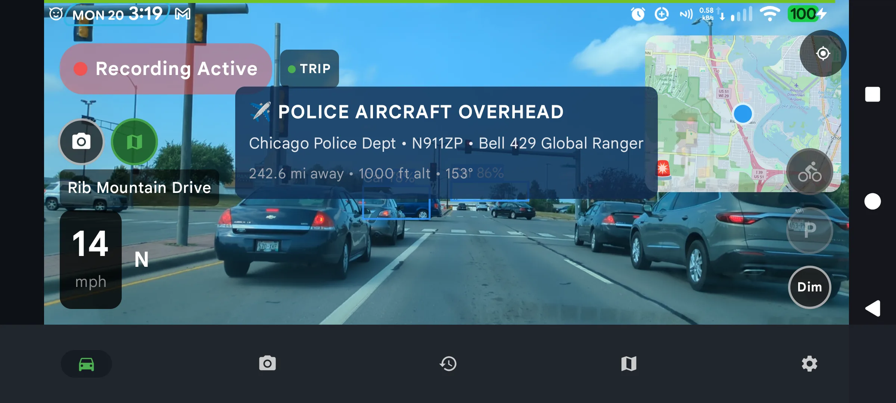
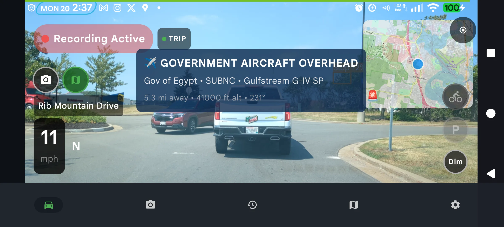
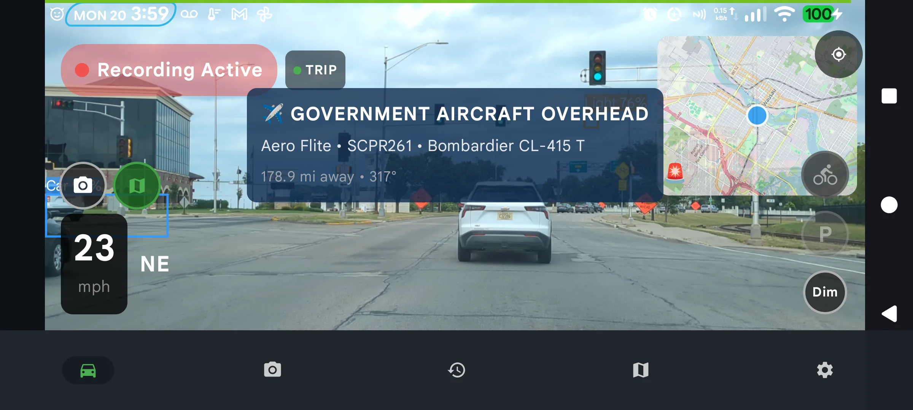

Police Aircraft Tracker App: Real Alerts Caught on My Dashcam
Radar detectors watch the road. Almost nothing watches the sky — even though police departments across the US fly helicopters and fixed-wing planes for speed enforcement, surveillance, and pursuit support every single day. When a state trooper clocks you from a Cessna orbiting at 3,000 feet, no radar detector on earth will beep.
DriveSight is a dash cam app with a police aircraft tracker built in. It watches public ADS-B flight data around your GPS position and alerts you the moment a law enforcement or government aircraft is inside your alert radius — with the operator, tail number, aircraft model, altitude, and distance right on screen while the dashcam keeps recording.
This week the tracker caught three real hits in one afternoon of driving around central Wisconsin. Here they are, exactly as they appeared.
Alert #1: Chicago Police Department Bell 429 Helicopter

Police aircraft alert while driving: Chicago PD Bell 429 Global Ranger, tail number N911ZP, tracked at 1,000 ft
The banner dropped over the dashcam view mid-drive: POLICE AIRCRAFT OVERHEAD — Chicago Police Dept · N911ZP · Bell 429 Global Ranger, flying at 1,000 feet. N911ZP is one of the Chicago Police Department's actual patrol helicopters — you can look the tail number up yourself in the FAA registry.
The distance readout is the interesting part: this bird was tracked from over 240 miles away, all the way from Chicago airspace. Your alert radius is configurable — keep it tight so you only hear about aircraft truly overhead, or open it up to see every police aircraft moving in your region.
Alert #2: A Government Gulfstream at 41,000 Feet

Government aircraft overhead: a Gulfstream G-IV SP at 41,000 ft, passing 5.3 miles out — caught at a red light in Wausau, WI
Sitting at a stoplight on Rib Mountain Drive, the tracker flagged a Gulfstream G-IV SP operated by the Government of Egypt passing 5.3 miles away at 41,000 feet. A foreign state aircraft crossing over a Wisconsin intersection is exactly the kind of thing you would never know about — and now it's a banner on the dashcam screen with the altitude and heading attached.
Alert #3: A Firefighting Super Scooper

Government aircraft alert: an Aero Flite Bombardier CL-415 "Super Scooper" firefighting tanker, callsign SCPR261
The third hit was a Bombardier CL-415 — the amphibious "Super Scooper" water bomber — operated by Aero Flite, a federal firefighting contractor. The watchlist doesn't stop at police: it covers roughly 2,700 known law-enforcement, government, and government-contract aircraft, and the alert tells you which category you're looking at.
How the Police Aircraft Tracker Works
Aircraft broadcast their own position
Nearly every aircraft in US airspace transmits its position, altitude, speed, and identity over ADS-B — unencrypted, by design, as part of the air traffic system. This is public data; flight tracking sites have rebroadcast it for years.
DriveSight polls the feed around your GPS position
While you drive, the app queries a public ADS-B feed for aircraft near your location. No extra hardware, no radio — the same phone running your dashcam does the work.
Every aircraft is checked against a watchlist
Each tail number is matched against a database of ~2,700 known police, government, and surveillance aircraft. Regular airliners and private planes are ignored — you only hear about the ones that matter.
You get an on-screen and voice alert
A banner shows the operator, tail number, model, altitude, distance, and heading, and the alert is spoken aloud so you never look away from the road. Matched aircraft also appear on the police map with live positions.
See what's flying over your drive
DriveSight is a full dash cam with police aircraft tracking, 336,000+ police & speed camera alerts, Flock ALPR locations, crash detection, and parking mode — all on the phone already in your car.
Download DriveSight FreeWhy This Matters for Drivers
Aerial speed enforcement is real and growing. State patrols in Wisconsin, Ohio, Florida, California, and a dozen other states run fixed-wing aircraft that time vehicles between painted highway markers, then radio a ground unit to make the stop. There is no radar signal to detect, so traditional detectors are blind to it. The only way to know is to know the aircraft itself — and that's public information the moment it takes off.
Beyond enforcement, the tracker answers a question everyone has asked: "Is that helicopter circling my neighborhood a police helicopter?" Open the police map and the answer is right there: who operates it, what model it is, and how high it's flying.
Frequently Asked Questions
Is there an app that tells you if a police helicopter is above you?
Yes — DriveSight alerts you when a law enforcement or government aircraft enters your alert radius, showing the operator, tail number, model, altitude, distance, and heading. It runs alongside the dashcam, so your drive is being recorded the whole time.
Is it legal to track police aircraft?
Yes. ADS-B position data is broadcast unencrypted by the aircraft themselves and is public information used by flight-tracking services worldwide. DriveSight cross-references those public feeds with publicly available registration data. Nothing is intercepted or decrypted.
What kinds of aircraft are on the watchlist?
Roughly 2,700 aircraft: municipal and state police helicopters and planes (like Chicago PD's Bell 429s), federal law-enforcement aircraft, government transports, and government contractors. Alerts label police aircraft and other government aircraft separately.
Does it need extra hardware?
No. The tracker uses your phone's existing internet connection to poll public ADS-B feeds. If your phone can run the dashcam, it can track aircraft at the same time.
Does aircraft tracking drain the battery?
The feed is polled on a timer using the GPS fix the dashcam already maintains, so the additional drain is negligible. Your phone should be on car power while recording anyway.
Radar detectors watch the road. DriveSight watches the sky too.
Police aircraft alerts, 336,000+ camera locations, live police map, crash detection, and a full dashcam — in one free download.
Download DriveSight Free